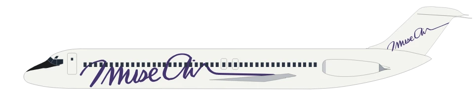

Muse Air in 1985
Muse Air flew 882 flights a week in 1985. Its busiest airports were Houston Hobby, Dallas Love and Austin. Here are its routes and its planes from that year's timetable.
TranStar was the name it took in 1986. Here its routes to California, Las Vegas and Florida fly in TranStar's colors.

Paint: Script (1981). Open Liveries drew it from dated photos.
Busiest airports
| Airport | Departures a week |
|---|---|
| Houston Hobby (HOU) | 294 |
| Dallas Love (DAL) | 136 |
| Austin (AUS) | 76 |
| New Orleans (MSY) | 56 |
| Los Angeles (LAX) | 54 |
| Las Vegas (LAS) | 51 |
| Tulsa (TUL) | 37 |
| Tampa (TPA) | 33 |
Planes
| Type | Flights a week |
|---|---|
| DC-9 | 554 |
| MD-80 | 328 |
Routes
These are all the city pairs Muse Air flew. Both directions count together.
| Route | Planes | Flights a week |
|---|---|---|
| Dallas Love – Houston Hobby | DC-9, MD-80 | 188 |
| Houston Hobby – New Orleans | MD-80 | 86 |
| Austin – Houston Hobby | MD-80 | 76 |
| Dallas Love – Tulsa | DC-9 | 62 |
| Brownsville – Houston Hobby | DC-9 | 60 |
| Houston Hobby – Mcallen | DC-9 | 58 |
| Houston Hobby – Los Angeles | MD-80 | 33 |
| Orlando – Tampa | DC-9 | 33 |
| Austin – Los Angeles | MD-80 | 28 |
| Las Vegas – Los Angeles | MD-80, DC-9 | 26 |
| Las Vegas – Midland | MD-80, DC-9 | 26 |
| Las Vegas – San Jose | MD-80 | 24 |
| Austin – Dallas Love | DC-9 | 22 |
| Houston Hobby – San Antonio | DC-9 | 21 |
| Houston Hobby – Tampa | DC-9 | 21 |
| Los Angeles – San Antonio | DC-9 | 21 |
| Austin – Las Vegas | MD-80 | 14 |
| Houston Hobby – Midland | DC-9 | 14 |
| Orlando – New Orleans | DC-9 | 14 |
| Austin – Midland | MD-80 | 12 |
| Houston Hobby – Las Vegas | MD-80 | 12 |
| Houston Hobby – Tulsa | DC-9 | 12 |
| New Orleans – Tampa | DC-9 | 12 |
| Houston Hobby – Orlando | DC-9 | 7 |
Where this comes from
Source: Muse Air system timetable, July 20, 1985. Ghostflights flies them again on today's date at their printed times. The planes' positions are simulated. More about Ghostflights.